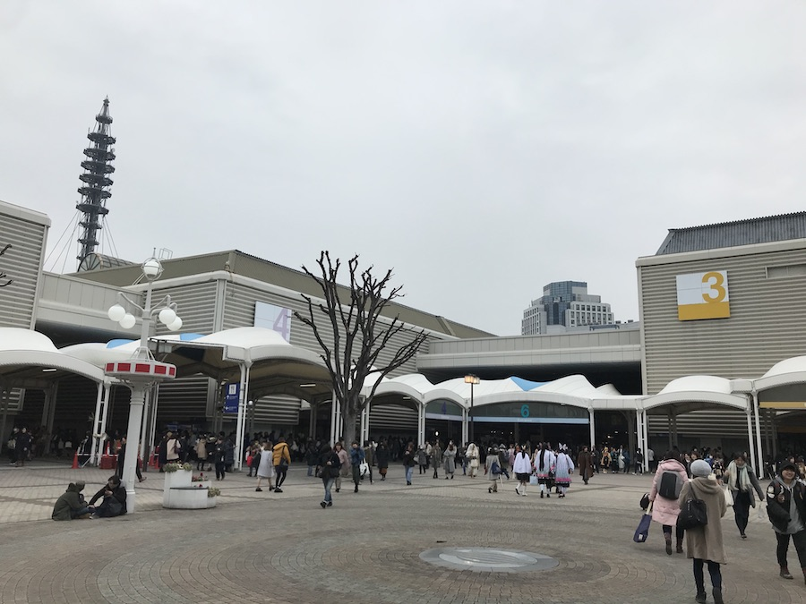
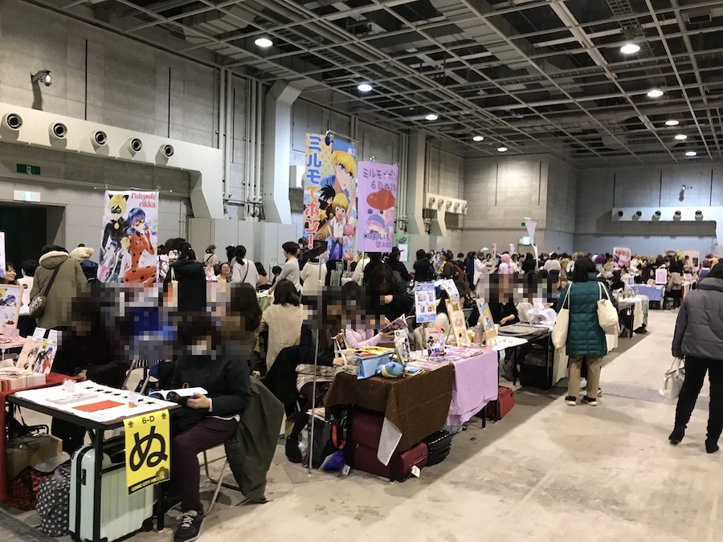
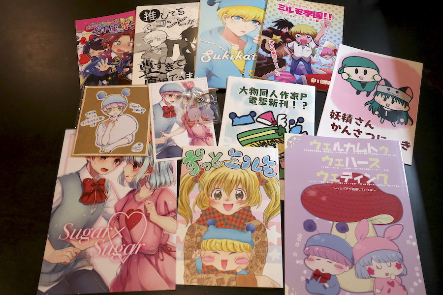
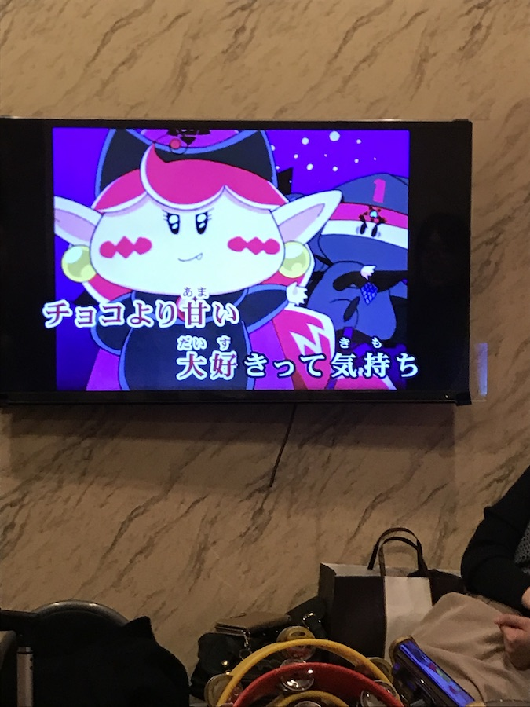
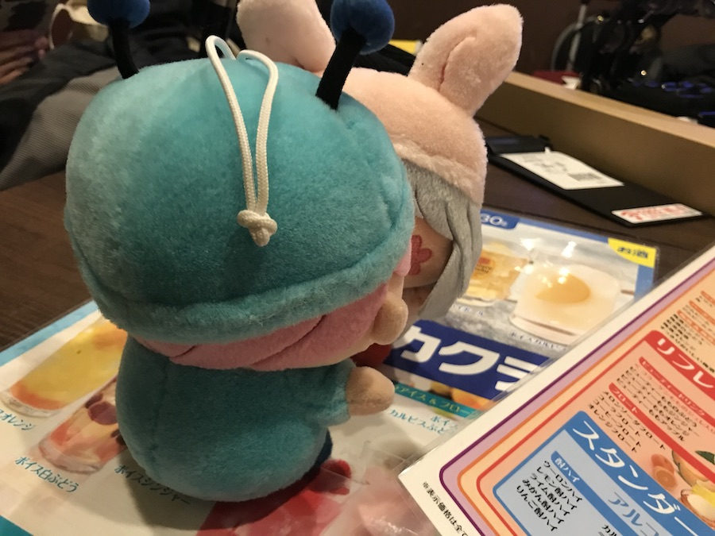
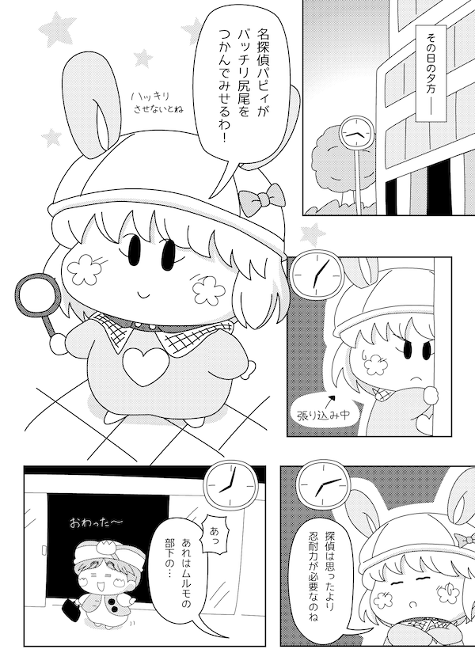

２０２０年１月１２日に、インテックス大阪で行われたイベント「COMIC CITY 大阪119」に一般参加してきました。
ミルモファンの皆様の活動により、毎年１月の大阪インテは、まさにミルモサークルが出展する恒例イベントですね（昨年はレポート記事を作れていなくてごめんなさい）。
そして２０２０年。なんとミルモサークルが５つも出展！！ アニメが放送していた頃も含めても、こんなに多くのミルモサークルが一度に出展されるのは史上初なのではないでしょーか。
今回の出展サークル様です（配置ブロックの若番順に記載）
・ほーせき（サファイアさん）
・ばぶりぼん（しおしゃけさん）
・クラッカー（見井山小恵さん）
・＊おいもや＊（空上出雲さん）
・ちょこっ糖ふゅーじょん！（けあさん＆筑元さん＆雪平さん）
それでは以下に簡単なレポートをまとめます。

今年は前日に大阪入りしたので、体調万全でインテックス大阪へ向かいました。
（本当は前日に大阪グルメを食べ過ぎてしまい、ちょっぴり胃もたれ状態でしたけど）
例年通りの大混雑の中を、ミルモサークル様の集う６号館Ｄへと進んでいきます。

会場に到着！
遠くからでもわかるくらい、広い会場内でミルモが幅をきかせていてすごいの一言！
各サークル様と順々に挨拶＆購入を行いましたが、ついつい舞い上がり過ぎてしまい、どんな挨拶をしたのかあまり記憶に残っていないという💦

今回購入した作品たちです。
表紙を眺めるだけでもかわいくてにんまりしてしまいますよね。
すべてを隅から隅まで目を通すのにどれくらいかかるだろう？と思えるくらいの大ボリュームです。
とにかくキャラやストーリーに対する皆さんの深堀り具合いがすごいので、私も熟読して勉強させていただきます！

夕方はサークルメンバーの方に混じって、カラオケオフに参加させていただきました。
キャラソンを含むミルモソングの異様な盛り上がりは、ホントすさまじかったですよ〜〜
私は歌を歌うのは得意ではないので、スケブ描き専門でしたけれど💦

カラオケの最中はムルパピもいちゃいちゃ。
最後にですが、実は私も今回のイベントにちょびっとだけ参加させていただいていたりします。
空上出雲さんの＊おいもや＊様へ、11Pの漫画原稿を寄稿しました。
こんな漫画ですが、とってもしょぼい内容で恥ずかし過ぎです＞＜

一日にこれほどのミルモ度を摂取したのは何年ぶりかなぁ？
この勢いに取り残されないよう、２０２０年は私もより一層のミルモ活動を進めていきたいと思います。
ミルモも連載開始２０周年が近づいていて、突然何かが起こりそうな気配もしますし。
おわりに、大阪インテに参加された方々、お疲れさまでした！
(2020/1/15)